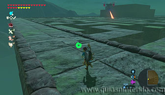

Este santuario está disponible desde que llegas a la región de la torre de Akkala, aunque para desbloquear la entrada necesitas completar la Prueba heroica: La prueba de la isla. Primero debes dirigirte a la Isla Lomei, al noreste del Laboratorio de Akkala. Toda la isla es un gigantesco laberinto y la prueba se activará en cuanto te acerques a él.
Puedes llegar hasta ella planeando desde el continente.
Hay una corriente de aire ascendente justo en la entrada de la isla, así que si te caes puedes usarla para subir rápidamente a la entrada. Un guardián te espera en el pasillo principal, puedes derrotarlo o esquivarlo. Lo mejor es que lo esquives y escales los muros del laberinto para alcanzar la cima.
Por aquí arriba hay guardianes voladores, pero no te resultará complicado esquivarlos y podrás avanzar mucho más rápido que por abajo.

El objetivo es llegar al punto indicado en el mapa de la siguiente foto. Desde ahí debes dejarte caer y encontrarás el camino para llegar al santuario.

Para ello, solo debes seguir el camino a través de las escaleras que vas a encontrar.
Sin embargo, puedes encontrar un mandoble de fuego antes de llegar a la entrada. Para ello tienes que quemar unas zarzas a mano derecha entre los dos tramos de escaleras.

Después regresa al pasillo anterior y sigue las escaleras para encontrar la entrada al santuario. En este momento se completará la prueba heroica.
Dentro podrás abrir el cofre que contiene un Casco de bárbaro. Después dirígete al altar para conseguir el símbolo de valía correspondiente.